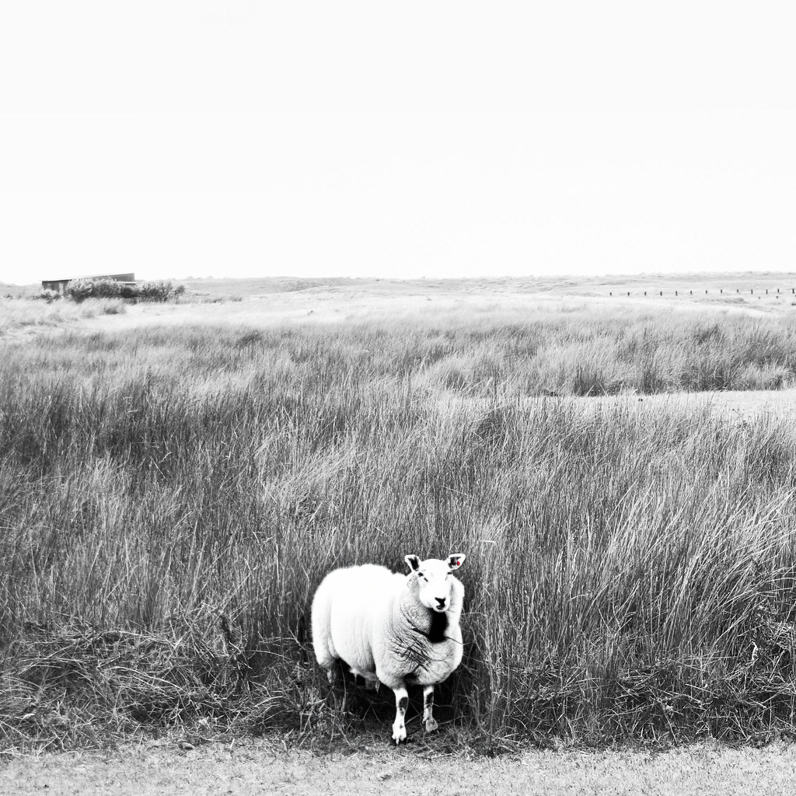
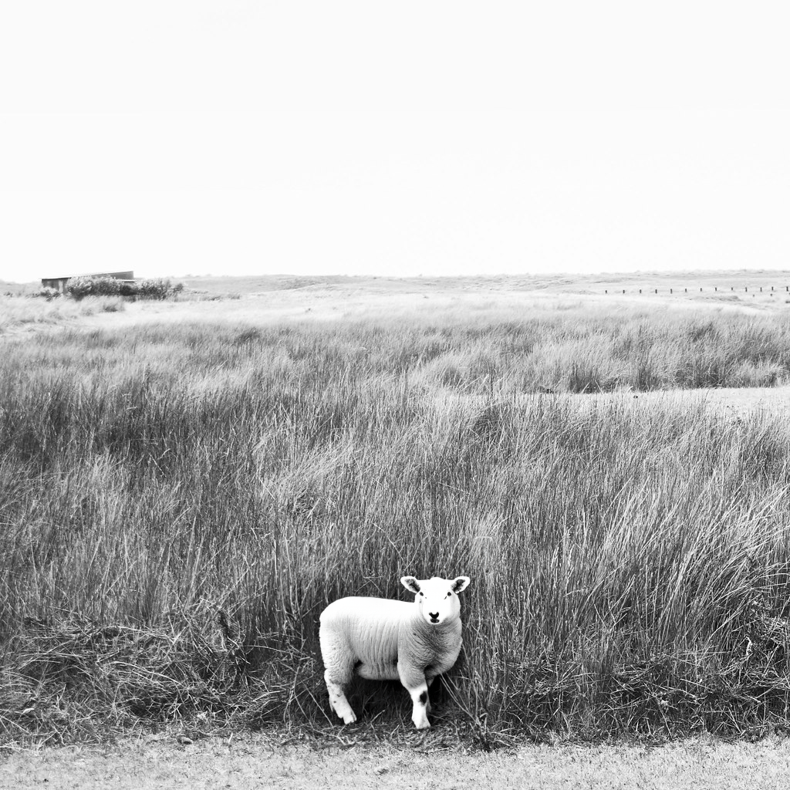
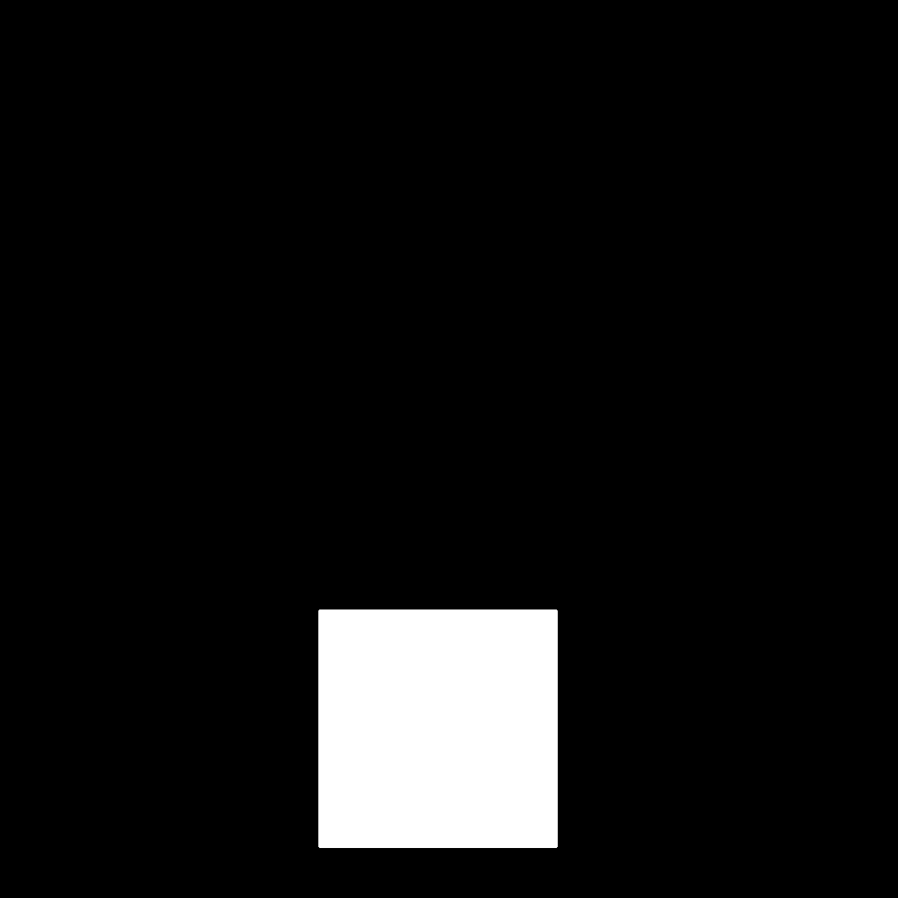
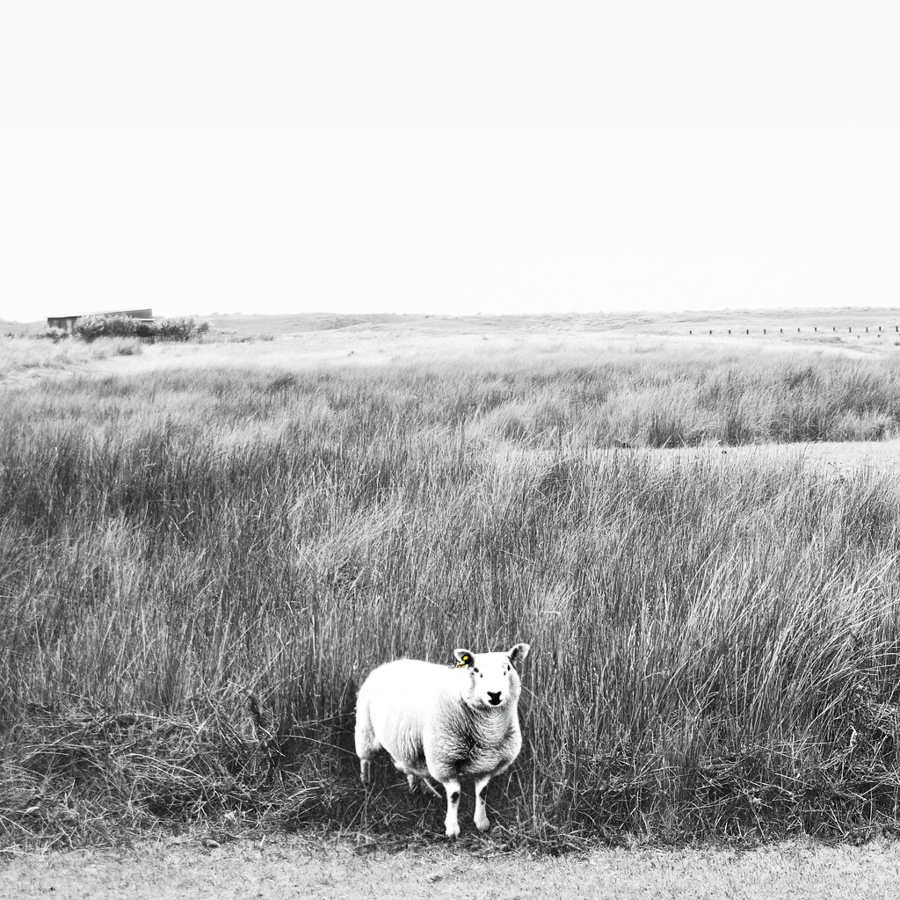
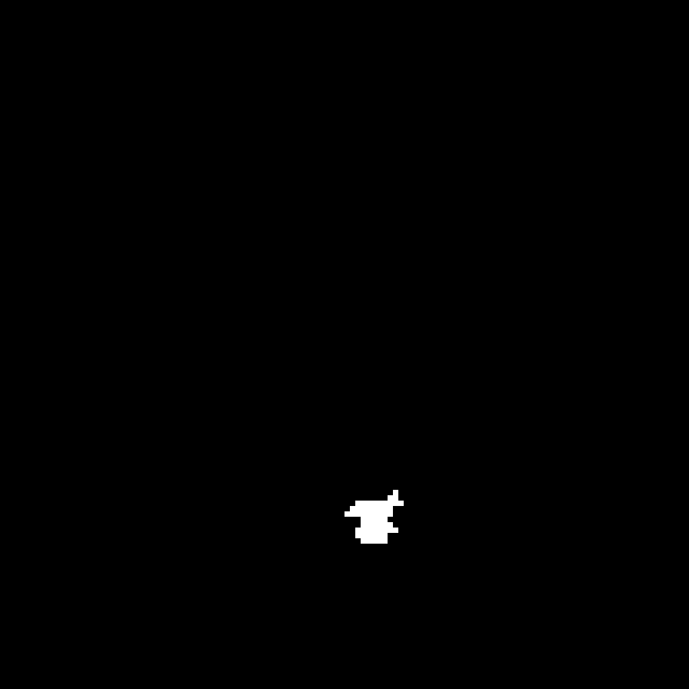
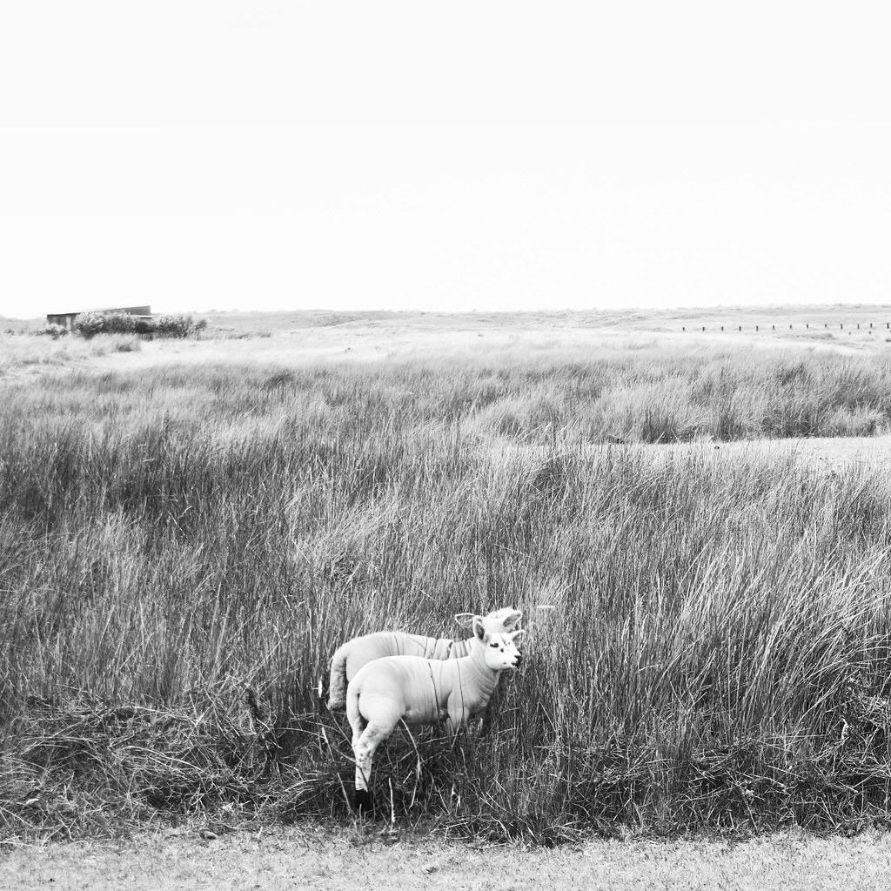
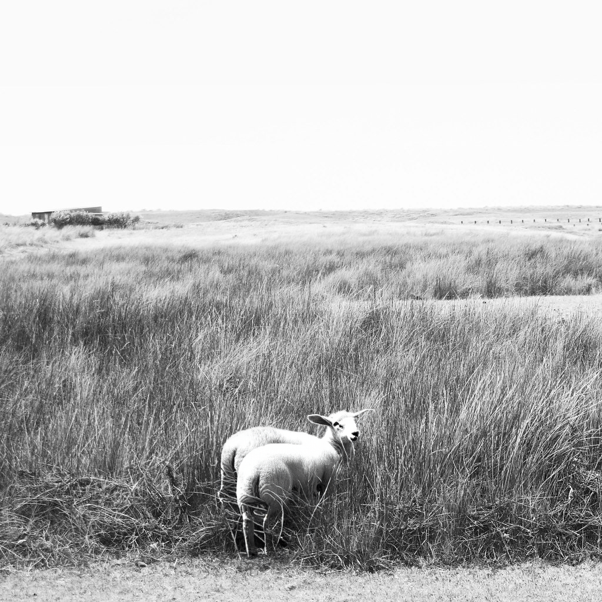
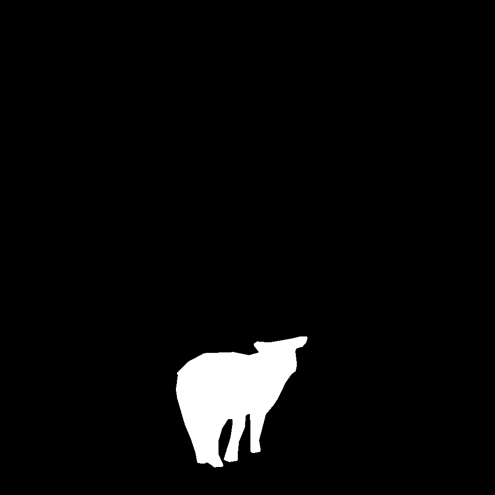
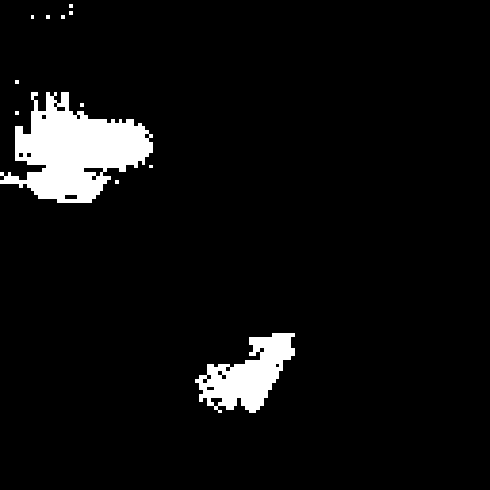

Mean IoU 0.3025; mean F1 0.4216; mean forward 4.555s on cpu.
One source scene, six correlated variants. Ground truth: adapted Photoshop mask >127. Prediction: class-1 probability >0.5. Input: 512x512. Not a full benchmark.
Full report | CSV scores | Dataset inventory
IoU 0.4444; F1 0.6153; forward 4.183s

IoU 0.0422; F1 0.0810; forward 4.541s


IoU 0.0509; F1 0.0968; forward 4.667s



IoU 0.5213; F1 0.6853; forward 4.467s

IoU 0.5507; F1 0.7103; forward 4.919s


IoU 0.2056; F1 0.3410; forward 4.550s


